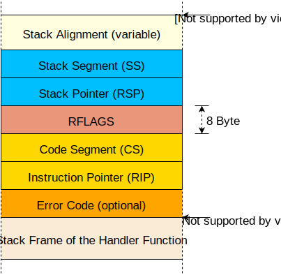

CPU Exceptions
CPU exceptions occur in various erroneous situations, for example, when accessing an invalid memory address or when dividing by zero. To react to them, we have to set up an interrupt descriptor table that provides handler functions. At the end of this post, our kernel will be able to catch breakpoint exceptions and resume normal execution afterward.
This blog is openly developed on GitHub. If you have any problems or questions, please open an issue there. You can also leave comments at the bottom. The complete source code for this post can be found in the post-05 branch.
Table of Contents
üîóOverview
An exception signals that something is wrong with the current instruction. For example, the CPU issues an exception if the current instruction tries to divide by 0. When an exception occurs, the CPU interrupts its current work and immediately calls a specific exception handler function, depending on the exception type.
On x86, there are about 20 different CPU exception types. The most important are:
- Page Fault: A page fault occurs on illegal memory accesses. For example, if the current instruction tries to read from an unmapped page or tries to write to a read-only page.
- Invalid Opcode: This exception occurs when the current instruction is invalid, for example, when we try to use new SSE instructions on an old CPU that does not support them.
- General Protection Fault: This is the exception with the broadest range of causes. It occurs on various kinds of access violations, such as trying to execute a privileged instruction in user-level code or writing reserved fields in configuration registers.
- Double Fault: When an exception occurs, the CPU tries to call the corresponding handler function. If another exception occurs while calling the exception handler, the CPU raises a double fault exception. This exception also occurs when there is no handler function registered for an exception.
- Triple Fault: If an exception occurs while the CPU tries to call the double fault handler function, it issues a fatal triple fault. We can’t catch or handle a triple fault. Most processors react by resetting themselves and rebooting the operating system.
For the full list of exceptions, check out the OSDev wiki.
üîóThe Interrupt Descriptor Table
In order to catch and handle exceptions, we have to set up a so-called Interrupt Descriptor Table (IDT). In this table, we can specify a handler function for each CPU exception. The hardware uses this table directly, so we need to follow a predefined format. Each entry must have the following 16-byte structure:
| Type | Name | Description |
|---|---|---|
| u16 | Function Pointer [0:15] | The lower bits of the pointer to the handler function. |
| u16 | GDT selector | Selector of a code segment in the global descriptor table. |
| u16 | Options | (see below) |
| u16 | Function Pointer [16:31] | The middle bits of the pointer to the handler function. |
| u32 | Function Pointer [32:63] | The remaining bits of the pointer to the handler function. |
| u32 | Reserved |
The options field has the following format:
| Bits | Name | Description |
|---|---|---|
| 0-2 | Interrupt Stack Table Index | 0: Don’t switch stacks, 1-7: Switch to the n-th stack in the Interrupt Stack Table when this handler is called. |
| 3-7 | Reserved | |
| 8 | 0: Interrupt Gate, 1: Trap Gate | If this bit is 0, interrupts are disabled when this handler is called. |
| 9-11 | must be one | |
| 12 | must be zero | |
| 13‑14 | Descriptor Privilege Level (DPL) | The minimal privilege level required for calling this handler. |
| 15 | Present |
Each exception has a predefined IDT index. For example, the invalid opcode exception has table index 6 and the page fault exception has table index 14. Thus, the hardware can automatically load the corresponding IDT entry for each exception. The Exception Table in the OSDev wiki shows the IDT indexes of all exceptions in the “Vector nr.” column.
When an exception occurs, the CPU roughly does the following:
- Push some registers on the stack, including the instruction pointer and the RFLAGS register. (We will use these values later in this post.)
- Read the corresponding entry from the Interrupt Descriptor Table (IDT). For example, the CPU reads the 14th entry when a page fault occurs.
- Check if the entry is present and, if not, raise a double fault.
- Disable hardware interrupts if the entry is an interrupt gate (bit 40 not set).
- Load the specified GDT selector into the CS (code segment).
- Jump to the specified handler function.
Don’t worry about steps 4 and 5 for now; we will learn about the global descriptor table and hardware interrupts in future posts.
üîóAn IDT Type
Instead of creating our own IDT type, we will use the InterruptDescriptorTable struct of the x86_64 crate, which looks like this:
#[repr(C)]
pub struct InterruptDescriptorTable {
pub divide_by_zero: Entry<HandlerFunc>,
pub debug: Entry<HandlerFunc>,
pub non_maskable_interrupt: Entry<HandlerFunc>,
pub breakpoint: Entry<HandlerFunc>,
pub overflow: Entry<HandlerFunc>,
pub bound_range_exceeded: Entry<HandlerFunc>,
pub invalid_opcode: Entry<HandlerFunc>,
pub device_not_available: Entry<HandlerFunc>,
pub double_fault: Entry<HandlerFuncWithErrCode>,
pub invalid_tss: Entry<HandlerFuncWithErrCode>,
pub segment_not_present: Entry<HandlerFuncWithErrCode>,
pub stack_segment_fault: Entry<HandlerFuncWithErrCode>,
pub general_protection_fault: Entry<HandlerFuncWithErrCode>,
pub page_fault: Entry<PageFaultHandlerFunc>,
pub x87_floating_point: Entry<HandlerFunc>,
pub alignment_check: Entry<HandlerFuncWithErrCode>,
pub machine_check: Entry<HandlerFunc>,
pub simd_floating_point: Entry<HandlerFunc>,
pub virtualization: Entry<HandlerFunc>,
pub security_exception: Entry<HandlerFuncWithErrCode>,
// some fields omitted
}
The fields have the type idt::Entry<F>, which is a struct that represents the fields of an IDT entry (see the table above). The type parameter F defines the expected handler function type. We see that some entries require a HandlerFunc and some entries require a HandlerFuncWithErrCode. The page fault even has its own special type: PageFaultHandlerFunc.
Let’s look at the HandlerFunc type first:
type HandlerFunc = extern "x86-interrupt" fn(_: InterruptStackFrame);
It’s a type alias for an extern "x86-interrupt" fn type. The extern keyword defines a function with a foreign calling convention and is often used to communicate with C code (extern "C" fn). But what is the x86-interrupt calling convention?
üîóThe Interrupt Calling Convention
Exceptions are quite similar to function calls: The CPU jumps to the first instruction of the called function and executes it. Afterwards, the CPU jumps to the return address and continues the execution of the parent function.
However, there is a major difference between exceptions and function calls: A function call is invoked voluntarily by a compiler-inserted call instruction, while an exception might occur at any instruction. In order to understand the consequences of this difference, we need to examine function calls in more detail.
Calling conventions specify the details of a function call. For example, they specify where function parameters are placed (e.g. in registers or on the stack) and how results are returned. On x86_64 Linux, the following rules apply for C functions (specified in the System V ABI):
- the first six integer arguments are passed in registers
rdi,rsi,rdx,rcx,r8,r9 - additional arguments are passed on the stack
- results are returned in
raxandrdx
Note that Rust does not follow the C ABI (in fact, there isn’t even a Rust ABI yet), so these rules apply only to functions declared as extern "C" fn.
üîóPreserved and Scratch Registers
The calling convention divides the registers into two parts: preserved and scratch registers.
The values of preserved registers must remain unchanged across function calls. So a called function (the “callee”) is only allowed to overwrite these registers if it restores their original values before returning. Therefore, these registers are called “callee-saved”. A common pattern is to save these registers to the stack at the function’s beginning and restore them just before returning.
In contrast, a called function is allowed to overwrite scratch registers without restrictions. If the caller wants to preserve the value of a scratch register across a function call, it needs to backup and restore it before the function call (e.g., by pushing it to the stack). So the scratch registers are caller-saved.
On x86_64, the C calling convention specifies the following preserved and scratch registers:
| preserved registers | scratch registers |
|---|---|
rbp, rbx, rsp, r12, r13, r14, r15 | rax, rcx, rdx, rsi, rdi, r8, r9, r10, r11 |
| callee-saved | caller-saved |
The compiler knows these rules, so it generates the code accordingly. For example, most functions begin with a push rbp, which backups rbp on the stack (because it’s a callee-saved register).
üîóPreserving all Registers
In contrast to function calls, exceptions can occur on any instruction. In most cases, we don’t even know at compile time if the generated code will cause an exception. For example, the compiler can’t know if an instruction causes a stack overflow or a page fault.
Since we don’t know when an exception occurs, we can’t backup any registers before. This means we can’t use a calling convention that relies on caller-saved registers for exception handlers. Instead, we need a calling convention that preserves all registers. The x86-interrupt calling convention is such a calling convention, so it guarantees that all register values are restored to their original values on function return.
Note that this does not mean all registers are saved to the stack at function entry. Instead, the compiler only backs up the registers that are overwritten by the function. This way, very efficient code can be generated for short functions that only use a few registers.
üîóThe Interrupt Stack Frame
On a normal function call (using the call instruction), the CPU pushes the return address before jumping to the target function. On function return (using the ret instruction), the CPU pops this return address and jumps to it. So the stack frame of a normal function call looks like this:

For exception and interrupt handlers, however, pushing a return address would not suffice, since interrupt handlers often run in a different context (stack pointer, CPU flags, etc.). Instead, the CPU performs the following steps when an interrupt occurs:
- Saving the old stack pointer: The CPU reads the stack pointer (
rsp) and stack segment (ss) register values and remembers them in an internal buffer. - Aligning the stack pointer: An interrupt can occur at any instruction, so the stack pointer can have any value, too. However, some CPU instructions (e.g., some SSE instructions) require that the stack pointer be aligned on a 16-byte boundary, so the CPU performs such an alignment right after the interrupt.
- Switching stacks (in some cases): A stack switch occurs when the CPU privilege level changes, for example, when a CPU exception occurs in a user-mode program. It is also possible to configure stack switches for specific interrupts using the so-called Interrupt Stack Table (described in the next post).
- Pushing the old stack pointer: The CPU pushes the
rspandssvalues from step 0 to the stack. This makes it possible to restore the original stack pointer when returning from an interrupt handler. - Pushing and updating the
RFLAGSregister: TheRFLAGSregister contains various control and status bits. On interrupt entry, the CPU changes some bits and pushes the old value. - Pushing the instruction pointer: Before jumping to the interrupt handler function, the CPU pushes the instruction pointer (
rip) and the code segment (cs). This is comparable to the return address push of a normal function call. - Pushing an error code (for some exceptions): For some specific exceptions, such as page faults, the CPU pushes an error code, which describes the cause of the exception.
- Invoking the interrupt handler: The CPU reads the address and the segment descriptor of the interrupt handler function from the corresponding field in the IDT. It then invokes this handler by loading the values into the
ripandcsregisters.
So the interrupt stack frame looks like this:

In the x86_64 crate, the interrupt stack frame is represented by the InterruptStackFrame struct. It is passed to interrupt handlers as &mut and can be used to retrieve additional information about the exception’s cause. The struct contains no error code field, since only a few exceptions push an error code. These exceptions use the separate HandlerFuncWithErrCode function type, which has an additional error_code argument.
üîóBehind the Scenes
The x86-interrupt calling convention is a powerful abstraction that hides almost all of the messy details of the exception handling process. However, sometimes it’s useful to know what’s happening behind the curtain. Here is a short overview of the things that the x86-interrupt calling convention takes care of:
- Retrieving the arguments: Most calling conventions expect that the arguments are passed in registers. This is not possible for exception handlers since we must not overwrite any register values before backing them up on the stack. Instead, the
x86-interruptcalling convention is aware that the arguments already lie on the stack at a specific offset. - Returning using
iretq: Since the interrupt stack frame completely differs from stack frames of normal function calls, we can’t return from handler functions through the normalretinstruction. So instead, theiretqinstruction must be used. - Handling the error code: The error code, which is pushed for some exceptions, makes things much more complex. It changes the stack alignment (see the next point) and needs to be popped off the stack before returning. The
x86-interruptcalling convention handles all that complexity. However, it doesn’t know which handler function is used for which exception, so it needs to deduce that information from the number of function arguments. That means the programmer is still responsible for using the correct function type for each exception. Luckily, theInterruptDescriptorTabletype defined by thex86_64crate ensures that the correct function types are used. - Aligning the stack: Some instructions (especially SSE instructions) require a 16-byte stack alignment. The CPU ensures this alignment whenever an exception occurs, but for some exceptions it destroys it again later when it pushes an error code. The
x86-interruptcalling convention takes care of this by realigning the stack in this case.
If you are interested in more details, we also have a series of posts that explain exception handling using naked functions linked at the end of this post.
üîóImplementation
Now that we’ve understood the theory, it’s time to handle CPU exceptions in our kernel. We’ll start by creating a new interrupts module in src/interrupts.rs, that first creates an init_idt function that creates a new InterruptDescriptorTable:
// in src/lib.rs
pub mod interrupts;
// in src/interrupts.rs
use x86_64::structures::idt::InterruptDescriptorTable;
pub fn init_idt() {
let mut idt = InterruptDescriptorTable::new();
}
Now we can add handler functions. We start by adding a handler for the breakpoint exception. The breakpoint exception is the perfect exception to test exception handling. Its only purpose is to temporarily pause a program when the breakpoint instruction int3 is executed.
The breakpoint exception is commonly used in debuggers: When the user sets a breakpoint, the debugger overwrites the corresponding instruction with the int3 instruction so that the CPU throws the breakpoint exception when it reaches that line. When the user wants to continue the program, the debugger replaces the int3 instruction with the original instruction again and continues the program. For more details, see the “How debuggers work” series.
For our use case, we don’t need to overwrite any instructions. Instead, we just want to print a message when the breakpoint instruction is executed and then continue the program. So let’s create a simple breakpoint_handler function and add it to our IDT:
// in src/interrupts.rs
use x86_64::structures::idt::{InterruptDescriptorTable, InterruptStackFrame};
use crate::println;
pub fn init_idt() {
let mut idt = InterruptDescriptorTable::new();
idt.breakpoint.set_handler_fn(breakpoint_handler);
}
extern "x86-interrupt" fn breakpoint_handler(
stack_frame: InterruptStackFrame)
{
println!("EXCEPTION: BREAKPOINT\n{:#?}", stack_frame);
}
Our handler just outputs a message and pretty-prints the interrupt stack frame.
When we try to compile it, the following error occurs:
error[E0658]: x86-interrupt ABI is experimental and subject to change (see issue #40180)
--> src/main.rs:53:1
|
53 | / extern "x86-interrupt" fn breakpoint_handler(stack_frame: InterruptStackFrame) {
54 | | println!("EXCEPTION: BREAKPOINT\n{:#?}", stack_frame);
55 | | }
| |_^
|
= help: add #![feature(abi_x86_interrupt)] to the crate attributes to enable
This error occurs because the x86-interrupt calling convention is still unstable. To use it anyway, we have to explicitly enable it by adding #![feature(abi_x86_interrupt)] at the top of our lib.rs.
üîóLoading the IDT
In order for the CPU to use our new interrupt descriptor table, we need to load it using the lidt instruction. The InterruptDescriptorTable struct of the x86_64 crate provides a load method for that. Let’s try to use it:
// in src/interrupts.rs
pub fn init_idt() {
let mut idt = InterruptDescriptorTable::new();
idt.breakpoint.set_handler_fn(breakpoint_handler);
idt.load();
}
When we try to compile it now, the following error occurs:
error: `idt` does not live long enough
--> src/interrupts/mod.rs:43:5
|
43 | idt.load();
| ^^^ does not live long enough
44 | }
| - borrowed value only lives until here
|
= note: borrowed value must be valid for the static lifetime...
So the load method expects a &'static self, that is, a reference valid for the complete runtime of the program. The reason is that the CPU will access this table on every interrupt until we load a different IDT. So using a shorter lifetime than 'static could lead to use-after-free bugs.
In fact, this is exactly what happens here. Our idt is created on the stack, so it is only valid inside the init function. Afterwards, the stack memory is reused for other functions, so the CPU would interpret random stack memory as IDT. Luckily, the InterruptDescriptorTable::load method encodes this lifetime requirement in its function definition, so that the Rust compiler is able to prevent this possible bug at compile time.
In order to fix this problem, we need to store our idt at a place where it has a 'static lifetime. To achieve this, we could allocate our IDT on the heap using Box and then convert it to a 'static reference, but we are writing an OS kernel and thus don’t have a heap (yet).
As an alternative, we could try to store the IDT as a static:
static IDT: InterruptDescriptorTable = InterruptDescriptorTable::new();
pub fn init_idt() {
IDT.breakpoint.set_handler_fn(breakpoint_handler);
IDT.load();
}
However, there is a problem: Statics are immutable, so we can’t modify the breakpoint entry from our init function. We could solve this problem by using a static mut:
static mut IDT: InterruptDescriptorTable = InterruptDescriptorTable::new();
pub fn init_idt() {
unsafe {
IDT.breakpoint.set_handler_fn(breakpoint_handler);
IDT.load();
}
}
This variant compiles without errors but it’s far from idiomatic. static muts are very prone to data races, so we need an unsafe block on each access.
üîóLazy Statics to the Rescue
Fortunately, the lazy_static macro exists. Instead of evaluating a static at compile time, the macro performs the initialization when the static is referenced the first time. Thus, we can do almost everything in the initialization block and are even able to read runtime values.
We already imported the lazy_static crate when we created an abstraction for the VGA text buffer. So we can directly use the lazy_static! macro to create our static IDT:
// in src/interrupts.rs
use lazy_static::lazy_static;
lazy_static! {
static ref IDT: InterruptDescriptorTable = {
let mut idt = InterruptDescriptorTable::new();
idt.breakpoint.set_handler_fn(breakpoint_handler);
idt
};
}
pub fn init_idt() {
IDT.load();
}
Note how this solution requires no unsafe blocks. The lazy_static! macro does use unsafe behind the scenes, but it is abstracted away in a safe interface.
üîóRunning it
The last step for making exceptions work in our kernel is to call the init_idt function from our main.rs. Instead of calling it directly, we introduce a general init function in our lib.rs:
// in src/lib.rs
pub fn init() {
interrupts::init_idt();
}
With this function, we now have a central place for initialization routines that can be shared between the different _start functions in our main.rs, lib.rs, and integration tests.
Now we can update the _start function of our main.rs to call init and then trigger a breakpoint exception:
// in src/main.rs
#[no_mangle]
pub extern "C" fn _start() -> ! {
println!("Hello World{}", "!");
blog_os::init(); // new
// invoke a breakpoint exception
x86_64::instructions::interrupts::int3(); // new
// as before
#[cfg(test)]
test_main();
println!("It did not crash!");
loop {}
}
When we run it in QEMU now (using cargo run), we see the following:

It works! The CPU successfully invokes our breakpoint handler, which prints the message, and then returns back to the _start function, where the It did not crash! message is printed.
We see that the interrupt stack frame tells us the instruction and stack pointers at the time when the exception occurred. This information is very useful when debugging unexpected exceptions.
üîóAdding a Test
Let’s create a test that ensures that the above continues to work. First, we update the _start function to also call init:
// in src/lib.rs
/// Entry point for `cargo test`
#[cfg(test)]
#[no_mangle]
pub extern "C" fn _start() -> ! {
init(); // new
test_main();
loop {}
}
Remember, this _start function is used when running cargo test --lib, since Rust tests the lib.rs completely independently of the main.rs. We need to call init here to set up an IDT before running the tests.
Now we can create a test_breakpoint_exception test:
// in src/interrupts.rs
#[test_case]
fn test_breakpoint_exception() {
// invoke a breakpoint exception
x86_64::instructions::interrupts::int3();
}
The test invokes the int3 function to trigger a breakpoint exception. By checking that the execution continues afterward, we verify that our breakpoint handler is working correctly.
You can try this new test by running cargo test (all tests) or cargo test --lib (only tests of lib.rs and its modules). You should see the following in the output:
blog_os::interrupts::test_breakpoint_exception... [ok]
üîóToo much Magic?
The x86-interrupt calling convention and the InterruptDescriptorTable type made the exception handling process relatively straightforward and painless. If this was too much magic for you and you like to learn all the gory details of exception handling, we’ve got you covered: Our “Handling Exceptions with Naked Functions” series shows how to handle exceptions without the x86-interrupt calling convention and also creates its own IDT type. Historically, these posts were the main exception handling posts before the x86-interrupt calling convention and the x86_64 crate existed. Note that these posts are based on the first edition of this blog and might be out of date.
üîóWhat‚Äôs next?
We’ve successfully caught our first exception and returned from it! The next step is to ensure that we catch all exceptions because an uncaught exception causes a fatal triple fault, which leads to a system reset. The next post explains how we can avoid this by correctly catching double faults.
Comments
Do you have a problem, want to share feedback, or discuss further ideas? Feel free to leave a comment here! Please stick to English and follow Rust's code of conduct. This comment thread directly maps to a discussion on GitHub, so you can also comment there if you prefer.
Instead of authenticating the giscus application, you can also comment directly on GitHub.